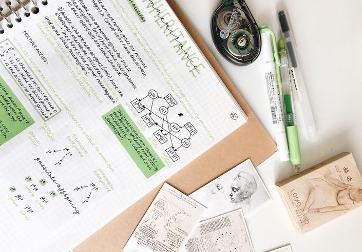

Preparing for College
/ here's the sitch
Your high school career doesn't determine the outcome of your future, but take advantage.
In recent years, academic achievement has become more important than ever before. Pressure for good grades, whether it’s from your parents or teachers or even from yourself, can leave students incredibly stressed. Not to mention, the stigma of a well-rounded resume can cause students to be completely consumed with costly standardized test preparation programs, challenging college-level classes, and demanding extracurriculars. Just like you, we have experience going through this process and a lot of the same things. No matter how you take on your junior and senior years, just make sure you are not overdoing yourself. Give yourself room to breath, room to prosper, and room to enjoy this time before this next chapter in life.
/ prepare and take standardized tests
Don’t wait until the fall of your senior year to take the SAT and ACT and any other standardized tests.
Taking them as early as possible is key to finding out what you need to improve on as well as giving you a better chance to get scholarships depending on how good your scores are. The very last time I would suggest taking either is in October of your senior year; because all applications are due by the first of November, you can then send your scores to your preferred colleges and superscore.